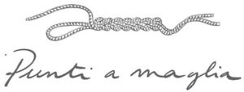

Trade Mark Journal No.2026/007 13 February 2026
WO0000001899248 (21,24)
Office of origin: Italy
Date of International Registration:14 November 2025
Date of designation in the UK:
14 November 2025

International priority date claimed: 31 July 2025
(Italy)
(302025000123838)
- Class 21
- Household or kitchen utensils and containers; porcelain ware; table plates; saucers; serving platters; meal trays; soup tureens; salad bowls; butter dishes; fruit bowls; cheese-dish covers; cups; coffee cups; teapots; sugar bowls; tea services [tableware]; coffee services [tableware]; vases; perfume burners, electric and non-electric; valet trays [receptacles for small objects] for household purposes; rice bowls; noodles bowls; earthenware basins; crystal [glassware]; napkin rings; bottle openers; cocktail sticks; drinking glasses; tankards; glass bottles; stemware; decanters; stew- pans; bread baskets for household purposes; pie servers; egg cups; knife rests for the table; menu card holders; sponge holders; toothpick holders; crumb trays; salt cellars; gravy boats; tea caddies; cookie jars; ice buckets; glass stoppers; works of art made of porcelain; cosmetic utensils; ceramics for household purposes.
- Class 24
- Textiles and textile goods; textiles for furnishings; curtain fabrics; non-woven textile fabrics; upholstery fabrics; curtain tie-backs of textile; cloth; furniture coverings of textile; wall hangings of textile; dust ruffles; bed valances; covers for cushions; sofa covers; covers [loose] for furniture; household linen; bed and table linen; bed blankets; bed covers; bedsheets; sleeping bags; lap rugs; table covers; towels of textile; waterproof textile fabrics; draperies [thick drop curtains]; shower curtains; window curtains; curtains made of textile fabrics; curtains of plastic; large bath towels; tablecloths of textile; labels of textile; handkerchiefs of textile; tablecloths, not of paper; oilcloth for use as tablecloths; table napkins of textile; place mats of textile; fabric table runners; table runners, not of paper; brocades; velvet.
LORO PIANA S.p.A.
Representative: Elisabetta CONTA c/o Barzanò & Zanardo S.p.A., Corso Vittorio Emanuele II, 61, I-10128 TORINO, ITALY